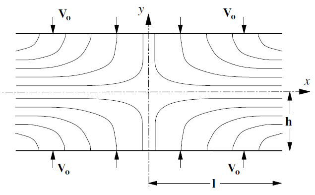
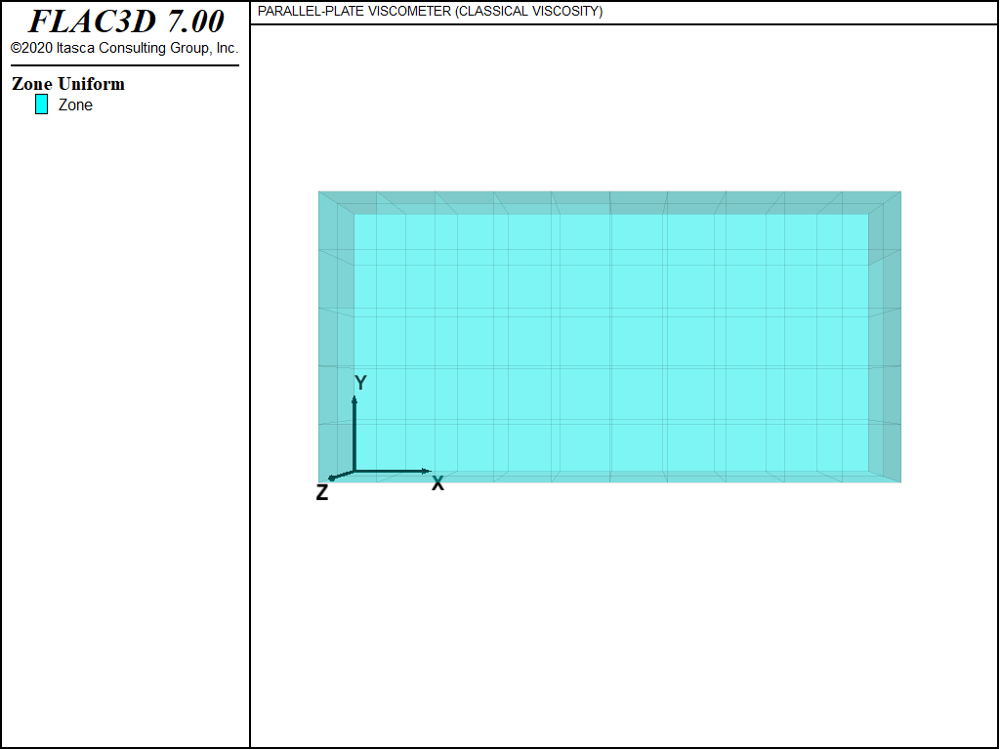
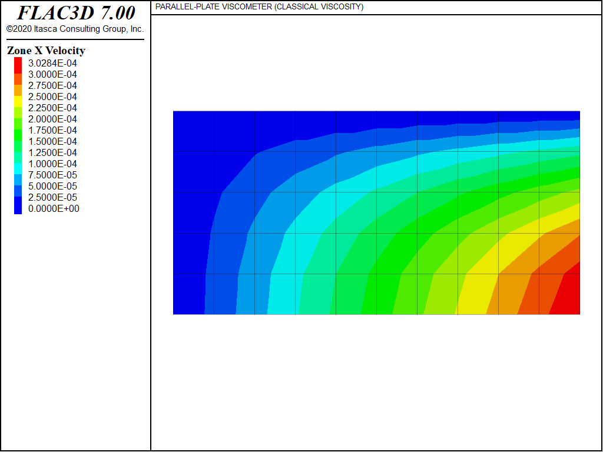
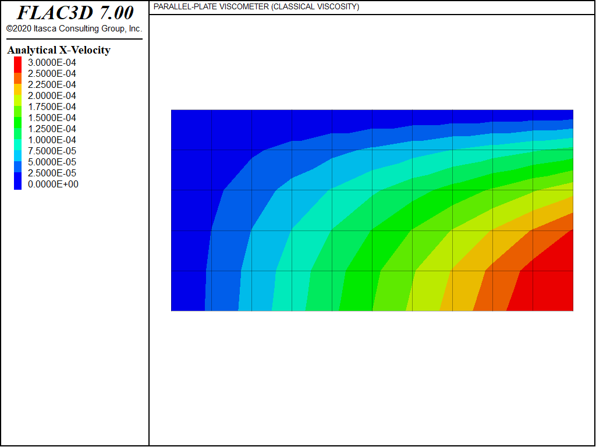
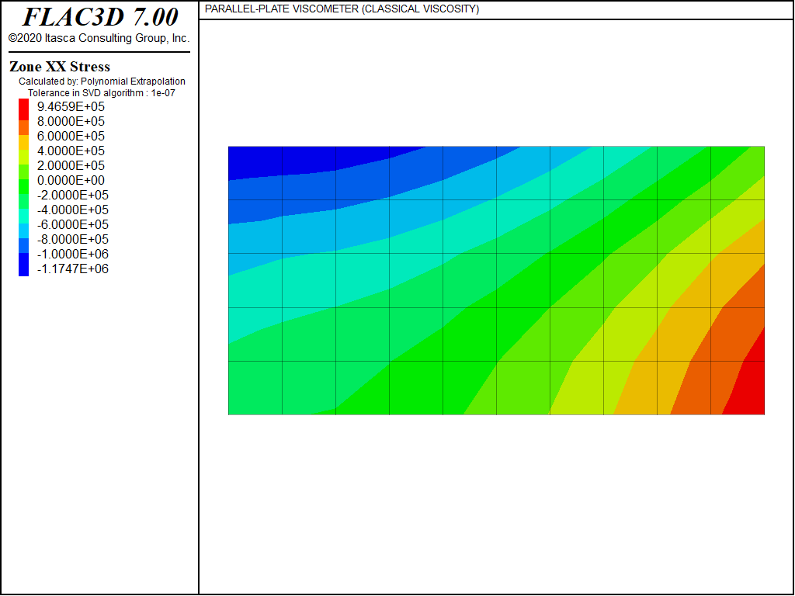
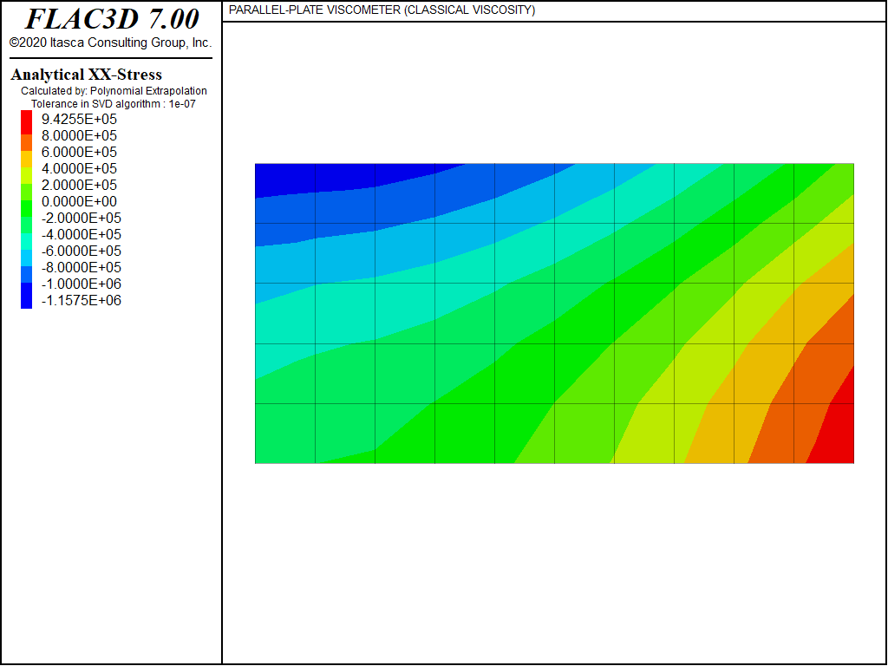

Maxwell/Kelvin/Burgers 模型：平行板黏度计
注意
要在 FLAC3D 中查看此项目，请使用菜单命令 。 选择“Creep/ ParallelPlateViscometerClassical”并选择“ParallelPlateViscometerClassical.f3dprj”以加载。 该项目的主数据文件见本示例末尾（main data files）。
本示例用于验证经典的 Maxwell 模型（Maxwell model） 和 Burgers 模型（Burgers model）。假设黏度为 \(\eta\) 的材料在两个以恒定速度 \(V_0\) 运动的平行板之间被稳定 挤压。两板长度为 2 \(l\)，间距为 2 \(h\)。材料在板处不发生滑移。Jaeger（1969）给出的近似解析解为
该问题示于 图 1（Figure 1）。


图 1：平行板黏度计的速度流线（Jaeger 1969）。
为用 FLAC3D 求解该问题，可利用关于 \(x\) 轴和 \(y\) 轴的对称性。 只需建模右上象限。 为与解析解的近似条件相协调， 需要在“自由”的右边缘施加人工力，并采用小应变逻辑。
材料特性为
| 剪切模量 | 5 × 108 Pa |
| 体积模量 | 1.5 × 109 Pa |
| viscosity | 1 × 1010 kg/ms |
粘度计试验中还使用 Burgers-Mohr 模型（Burgers-Mohr model）（zone cmodel burgers-mohr）检验了
Maxwell 模型（Maxwell model） 分量。
将黏聚力和抗拉强度设为很高的值，以防止粘塑性模型
发生塑性破坏，从而使其等效于经典 Burgers 模型（Burgers model）。该模型的附加命令包含在 主
数据文件（main
data files） 中。以各模型执行该数据文件后，
所得结果与经典粘弹性模型的结果完全相同。
FLAC3D 网格示于 图 2（Figure 2）。
解析解由 FISH 函数 解析（analytical）计算，利用扩展数组 存储计算值。FLAC3D 与闭式解之间吻合良好。\(x\) 方向速度的云图绘于 图 3（Figure 3）。 相应的解析解示于 图 4（Figure 4）。 \(\sigma_{xx}\) 的云图示于 图 5（Figure 5）， 解析值示于 图 6（Figure 6）。


图 2：平行板试验的 FLAC3D 网格。


图 3：FLAC3D 计算的 x 方向速度云图。


图 4：解析解给出的 x 方向速度云图（来自网格点附加数组 1）。


图 5：FLAC3D 计算的 \(\sigma_{xx}\) 云图。


图 6：解析解给出的 \(\sigma_{xx}\) 云图（来自网格单元附加数组 1）。
数据文件
;------------------------------------------------------------
; 平行板黏度计——经典模型
;-------------------------------------------------------------------
model new
model large-strain off
fish automatic-create off
model title "PARALLEL-PLATE VISCOMETER (CLASSICAL VISCOSITY)"
model configure creep
;
program call 'AnalyticalSolution'
;
zone create brick size 10 5 2
zone face skin
zone cmodel maxwell
zone property shear 0.5e9 bulk 1.5e9 viscosity 1e10
;
zone face apply velocity-x 0.0 range group 'West' or 'North'
zone face apply velocity-y 0.0 range group 'North' or 'South'
zone face apply velocity-z 0.0
zone face apply velocity-y -1e-4 range group 'North'
; 右侧边界上的力
zone gridpoint fix force-applied-x 2.25e5 ...
range position-x 10 position-y 0 position-z 0
zone gridpoint fix force-applied-x 4.32e5 ...
range position-x 10 position-y 1 position-z 0
zone gridpoint fix force-applied-x 4.32e5 ...
range position-x 10 position-y 1 position-z 0
zone gridpoint fix force-applied-x 3.78e5 ...
range position-x 10 position-y 2 position-z 0
zone gridpoint fix force-applied-x 2.88e5 ...
range position-x 10 position-y 3 position-z 0
zone gridpoint fix force-applied-x 1.62e5 ...
range position-x 10 position-y 4 position-z 0
zone gridpoint fix force-applied-x 4.50e5 ...
range position-x 10 position-y 0 position-z 1
zone gridpoint fix force-applied-x 8.64e5 ...
range position-x 10 position-y 1 position-z 1
zone gridpoint fix force-applied-x 7.56e5 ...
range position-x 10 position-y 2 position-z 1
zone gridpoint fix force-applied-x 5.76e5 ...
range position-x 10 position-y 3 position-z 1
zone gridpoint fix force-applied-x 3.24e5 ...
range position-x 10 position-y 4 position-z 1
zone gridpoint fix force-applied-x 2.25e5 ...
range position-x 10 position-y 0 position-z 2
zone gridpoint fix force-applied-x 4.32e5 ...
range position-x 10 position-y 1 position-z 2
zone gridpoint fix force-applied-x 3.78e5 ...
range position-x 10 position-y 2 position-z 2
zone gridpoint fix force-applied-x 2.88e5 ...
range position-x 10 position-y 3 position-z 2
zone gridpoint fix force-applied-x 1.62e5 ...
range position-x 10 position-y 4 position-z 2
zone gridpoint fix force-applied-y -1.2e5 ...
range position-x 10 position-y 1 position-z 0
zone gridpoint fix force-applied-y -1.2e5 ...
range position-x 10 position-y 1 position-z 0
zone gridpoint fix force-applied-y -2.4e5 ...
range position-x 10 position-y 2 position-z 0
zone gridpoint fix force-applied-y -3.6e5 ...
range position-x 10 position-y 3 position-z 0
zone gridpoint fix force-applied-y -4.8e5 ...
range position-x 10 position-y 4 position-z 0
zone gridpoint fix force-applied-y -2.4e5 ...
range position-x 10 position-y 1 position-z 1
zone gridpoint fix force-applied-y -4.8e5 ...
range position-x 10 position-y 2 position-z 1
zone gridpoint fix force-applied-y -7.2e5 ...
range position-x 10 position-y 3 position-z 1
zone gridpoint fix force-applied-y -9.6e5 ...
range position-x 10 position-y 4 position-z 1
zone gridpoint fix force-applied-y -1.2e5 ...
range position-x 10 position-y 1 position-z 2
zone gridpoint fix force-applied-y -2.4e5 ...
range position-x 10 position-y 2 position-z 2
zone gridpoint fix force-applied-y -3.6e5 ...
range position-x 10 position-y 3 position-z 2
zone gridpoint fix force-applied-y -4.8e5 ...
range position-x 10 position-y 4 position-z 2
;
model creep active on
model creep timestep fix 1
model save 'ini'
;
model step 900
[analytical(-1e-4,5,10,1e10)]
model save 'viscplate-maxwell'
;
model restore 'ini'
zone cmodel burgers-mohr
zone property shear-maxwell 0.5e9 bulk 1.5e9 viscosity-maxwell 1e10 ...
cohesion 1e10 tension 1e10 ; model cvisc
model step 900
[analytical(-1e-4,5,10,1e10)]
model save 'viscplate-burgers-mohr'
| 这些内容对您有帮助吗？… 版权与免责声明 |
FLAC3D © 2019, Itasca | 原文更新于 2020 年 10 月 8 日 |